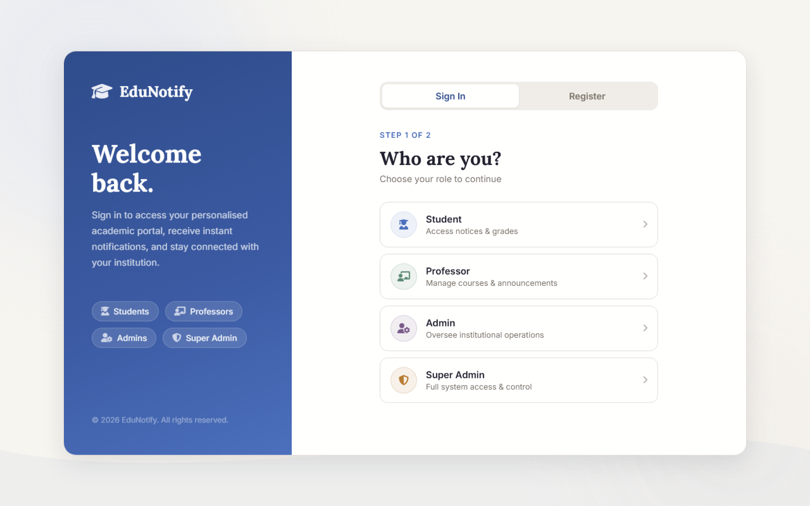
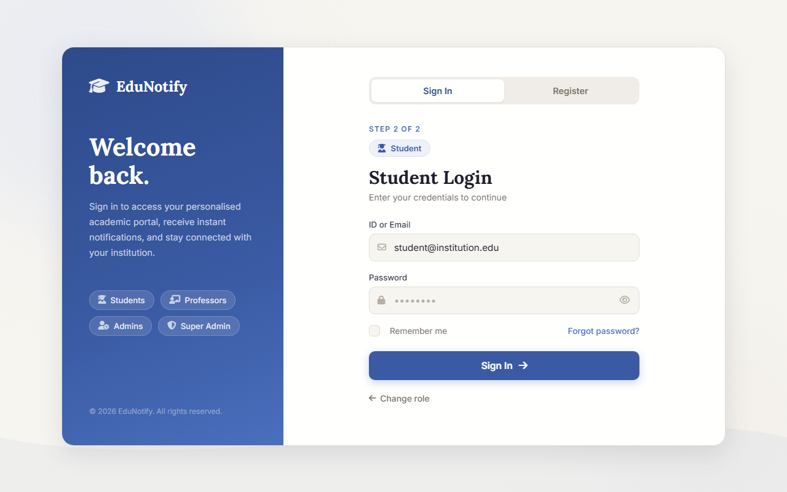
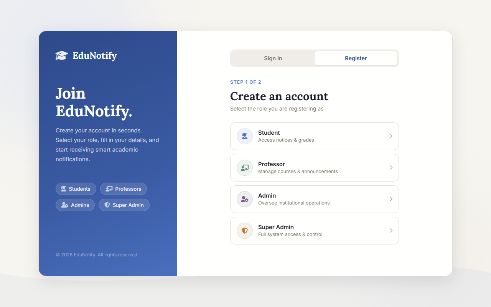
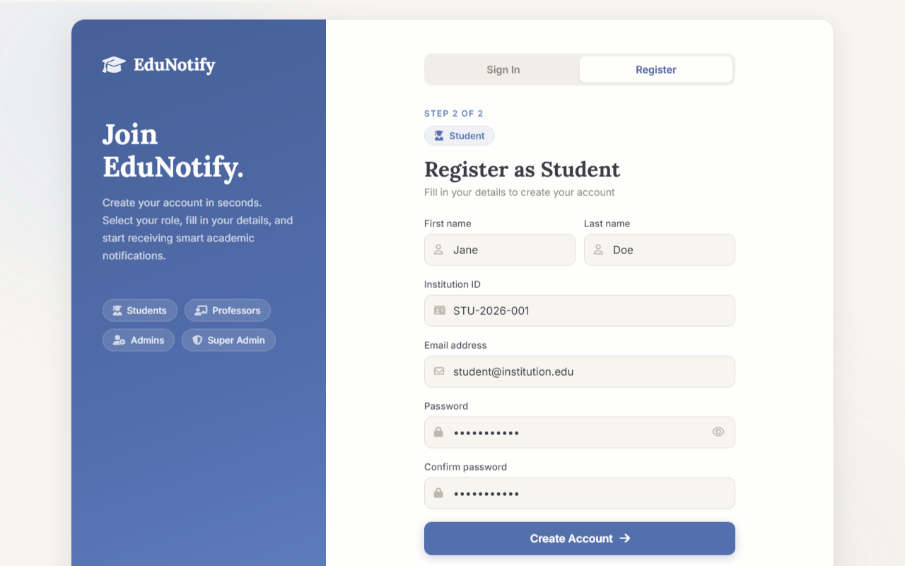
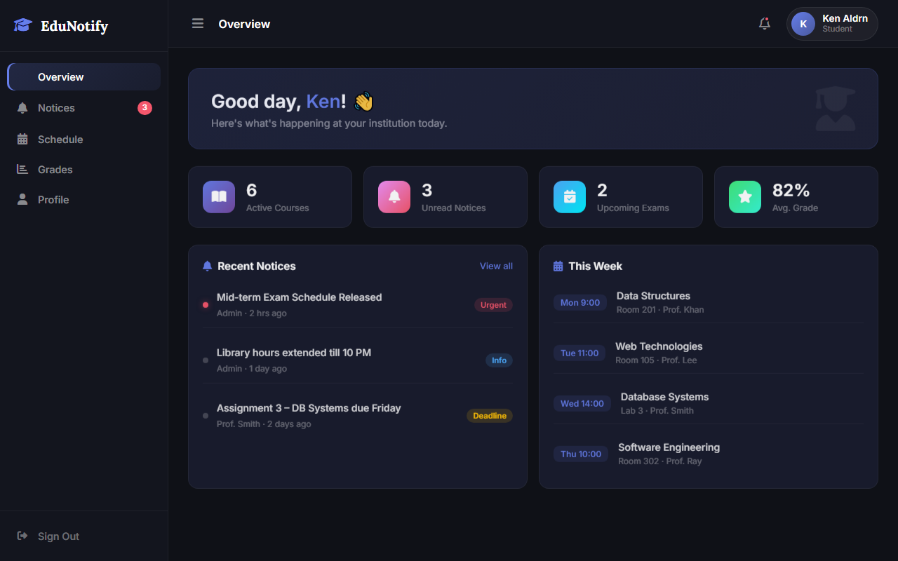
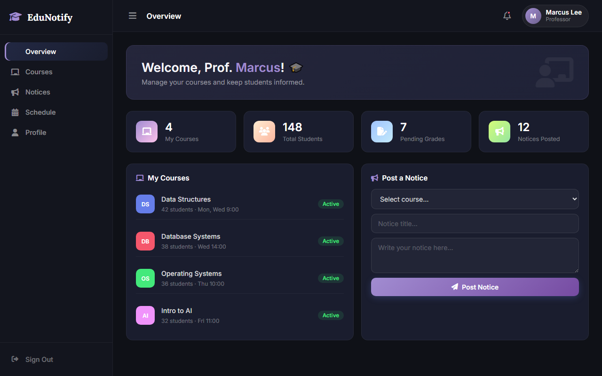
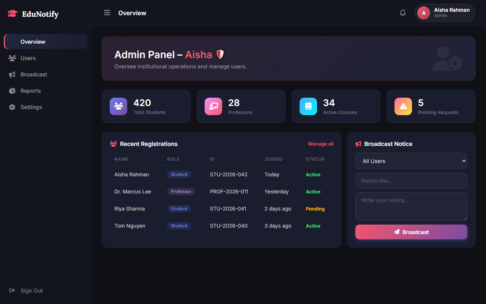
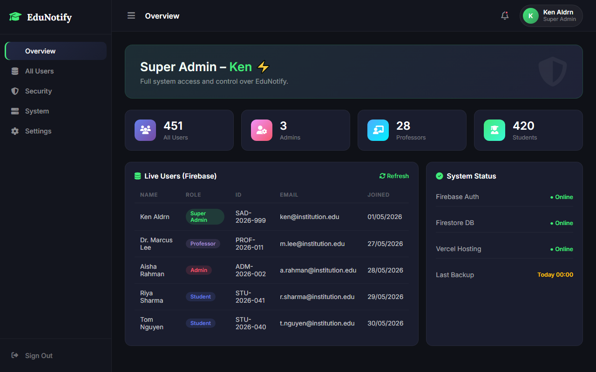

EduNotify
Smart Educational Notification Portal
Programming for Data Science — Faculty of Computing
1. Abstract & Executive Summary
The Solution
EduNotify is a cloud-based, multi-role Smart Notification Portal designed to bridge the communication gap between students, professors, and administrators within academic environments.
By organizing notice delivery into tailored role streams, it resolves information fragmentation, delays, and critical missed deadlines.
Cloud Serverless
Firebase & Vercel integration
4 User Roles
Secure authentication & routing
Real-Time Sync
Live Firestore updates
2. Introduction & Background
Academic Communication Bottlenecks
Educational institutions generate vast amounts of time-sensitive info daily — exam schedules, deadlines, course revisions, and fee bulletins. Traditional methods like physical notice boards or mass emails fail due to clutter and latency.
- Physical boards require manual presence
- Mass emails suffer from severe spam clutter
- Messaging apps lack structure and archiving
Industry Relevance
Enterprise Student Information Systems (SIS) like Moodle or Canvas are heavy and expensive. EduNotify targets mid-size institutions needing a rapidly deployable, cost-free, lightweight notification hub.
3. Problem Statement & Significance
The Impact of Communication Failures
Missed notice schedules lead directly to missed exams, overdue assignments, and administrative delays. Surveys indicate 67% of university students miss at least one important notice per semester due to fragmented channels.
Current System Limitations:
- No role-based access control (RBAC)
- No persistent notification archive
- No centralized user verification auditing
- High administrative overhead
Communication Channel Analysis
4. Project Objectives
Secure RBAC
Implement role-based credentials validation and login routing using Firebase Authentication.
Custom Dashboards
Provide 4 separate interfaces: Student, Professor, Admin, and Super Admin dashboard views.
Notice Broadcasting
Allow course notice posting by professors and global audience broadcasts by administrative staff.
Cloud Deployment
Host statically on Vercel Edge CDN with live database bindings and zero infrastructure costs.
5. Literature Review & Gap Analysis
| System Category | Representative Platform | Core Advantages | Identified Gap / Weakness |
|---|---|---|---|
| Enterprise LMS | Moodle, Canvas, Blackboard | Comprehensive feature suites | High cost, steep learning curve, heavy servers |
| Public Cloud LMS | Google Classroom | User-friendly, cost-free | No institutional administrative hierarchy control |
| Social Platforms | WhatsApp, Telegram Groups | Instant delivery, zero setup | No RBAC, unverified posts, no archival structure |
| EduNotify | Custom Cloud Portal | RBAC, modern UI, zero-cost | Early-stage development, lightweight features |
6. Proposed Development Methodology
Agile-Inspired Iterative Lifecycle
Developed over a five-week cycle using Agile principles divided into three sprints:
-
Sprint 1 (Weeks 1-2): UI/UX Prototyping
Designing splash animation, forms, and responsive layouts.
-
Sprint 2 (Week 3): Core Firebase Wiring
Integrating Auth and Cloud Firestore document read/write handlers.
-
Sprint 3 (Weeks 4-5): Dashboards & Vercel
Completing role-specific dashboards, dark theme polishing, and edge CDN deployment.
7. System Architecture & Flows
┌──────────────────────────────────────────────┐
│ USER BROWSER │
│ ┌────────────┐ ┌──────────┐ ┌──────────┐ │
│ │ index.html │ │style.css │ │script.js │ │
│ └─────┬──────┘ └──────────┘ └────┬─────┘ │
└────────┼────────────────────────────┼────────┘
│ │
│ Firebase SDK (CDN) │
└─────────────┬──────────────┘
│
┌──────────────────────▼───────────────────────┐
│ GOOGLE FIREBASE CLOUD │
│ ┌────────────────────┐ ┌────────────────┐ │
│ │ Firebase Auth │ │Cloud Firestore │ │
│ │ (Identity Gateway) │ │ (NoSQL Schema) │ │
│ └────────────────────┘ └────────────────┘ │
└──────────────────────────────────────────────┘
Data Pipeline Pipeline
1. Serving: Vercel hosts static HTML/CSS/JS files, delivered via global edge servers.
2. Authentication: Browser communicates with Firebase Identity servers to validate role login tokens.
3. Document Routing: Profile document fetched by UID from Firestore. Router verifies role matches selection; redirects to proper dashboard.
8. Technical Implementation Stack
HTML5
Semantic structures, inputs validation, accessibility attributes.
CSS3 Custom
Variables, keyframe animations, glassmorphism filters, responsive grids.
ES2022 JavaScript
Vanilla syntax, async/await bindings, dynamic DOM rendering.
Firebase Cloud
Authentication engine, secure Cloud Firestore NoSQL storage.
Vercel PaaS
Statically compiled edge hosting, auto-build hooks via GitHub.
9. NoSQL Firestore Schema Design
The User Schema
Primary Collection: users/{uid}
Document ID is mapped exactly to the Firebase Authentication UID for high-efficiency, O(1) profile lookups on auth state changes.
Document Fields:
- uid: String (Document key)
- firstName: String (Trimming validated)
- lastName: String (Trimming validated)
- email: String (Auth unique key)
- institutionId: String (Index unique per role)
- role: Enum (student | professor | admin | superadmin)
- registered: Timestamp (Server timestamp)
{
"uid": "xKj8m3nPqR...",
"firstName": "Aisha",
"lastName": "Rahman",
"email": "a.rahman@uni.edu",
"institutionId": "ADM-2026-002",
"role": "admin",
"registered": "28/05/2026 15:20"
}
10. Work Packages & Project Gantt
11. SWOT Analysis
Strengths
- Zero infrastructure cost
- Serverless maintenance
- Responsive, adaptive layouts
- Premium dark glassmorphism
Weaknesses
- Client-side code dependency
- No offline-mode fallback
- Firebase vendor lock-in
- Notice CRUD not fully wired
Opportunities
- AI notice smart ranking
- PWA offline compilation
- Twilio SMS integration
- Multi-tenancy structures
Threats
- API key exposure risk
- Scale billing pricing tiers
- GDPR policy compliance
- LMS legacy competitors
12. Risk Analysis & Mitigation
| Risk Factor | Impact | Likelihood | Mitigation Strategy |
|---|---|---|---|
| Firebase Spark Quota limits | High | Medium | Implement client-side session caching; move to Blaze scale tier when active users exceed 500. |
| Unauthorised role escalation | Critical | Low | Enforce server-side security checks directly inside Firestore DB Security Rules, not only in browser routing. |
| Firebase API Key exposure | High | Medium | Configure strict domain locks inside the Google Cloud Console to only allow connections from vercel.app. |
| Cross-browser compatibility | Medium | Medium | Perform browser automated testing on Edge, Chrome, Safari; integrate CSS custom properties fallbacks. |
13. System Screens: Splash Intro
First Impression Branding
Upon loading the portal, users are greeted with a premium, animated splash intro to set the visual tone of the platform.
Key Interactions:
- Smooth fadeIn animations for cap logo
- SlideUp typography for brand header
- Custom 2-stage animated loading progress bar
- Auto redirection to Auth panel in 3.4 seconds
14. System Screens: Authentication Gate


Secure Role Selection Routing
Bypassing credentials check for incorrect roles via a multi-step login flow.
Security Features:
- 1. Explicit Role Grid: Users click their role (Student, Professor, Admin, Super Admin) with targeted hover feedback.
- 2. Badge Context: The login form updates dynamically showing the selected role badge.
- 3. Password Toggle: Built-in password visibility helper.
- 4. Session Persistence: "Remember me" options.
15. System Screens: Registration Flow
Account Profile Provisioning
A role-aware sign-up workflow that creates the Firebase Authentication account and automatically initializes a Firestore profile document.
Data Validations:
- Trims all inputs to remove whitespaces
- Email verification validation format checks
- Minimum password security limits (8+ chars)
- Unique Institution ID query checks on Firestore


16. Student Dashboard

Academic Schedule & Alerts
Personalized student home hub serving essential notifications and scheduling metrics.
Key Elements:
- Stat Cards: Gradient icon blocks highlighting Active Courses (6), Unread Notices (3), Exams (2), GPA (82%).
- Recent Notices: Filtered urgent/deadline streams (Mid-terms, Library hours).
- This Week Schedule: Timetable display showing courses, room allocations, and professors.
17. Professor Dashboard
Course Oversight & Notice Posting
Facilitates announcements creation and course listing for academic staff.
Key Actions:
- Course Lists: Responsive lists displaying student count and timing tags.
- Post Notice Form: Interface to choose targeted course, write headline text, type notices body detail, and sync to DB.
- Action Feedback: Toast notifications immediately alert the user upon successful postings.

18. Admin & Super Admin Views


System Operations Control
Management dashboards for system-wide auditing and oversight.
Key Functions:
- Recent Registrations: Table displaying new profile updates, roles, and status tags.
- Global Broadcasts: Interface to target audiences (All, Students, Faculty).
- Firebase Live Users: Super Admin real-time table displaying auth logs, and registration stats.
- Cloud Status: Live service uptime checks.
19. Results, Future Scope & Conclusion
Core Achievements
EduNotify successfully demonstrates a modern, role-aware academic notification pipeline deployable at zero hosting cost.
Future Roadmap:
- Full CRUD database listeners (onSnapshot)
- PWA conversion for offline push updates
- SMS integration using Cloud Functions
- AI notice prioritization (tfjs models)
Project Status
● LIVE & DEPLOYED
edunotify.vercel.app